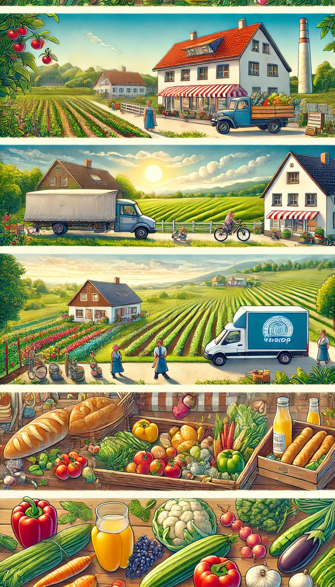

Unsere Organisation ist
Weltbewegend
Wir machen alles ein bisschen anders als normale Supermärkte. Und das hat Vorteile.
frische ProdukteWir beziehen unsere Produkte von lokalen Bauerhöfen kein Food wasteWeil wir nur das bestellen was Ihr bestellt, verschwenden wir keine Lebensmittel |

|
grüne Energieunsere Lieferwägen sind Elektrisch und laufen auf erneuerbaren Energien |
Über uns
Wir sind eine kleine Gruppe Studenten an der Universität für Nanotechnologie in Hamburg. Früher beschwerten wir uns immer darüber, dass wir in unserer Kantine immer nur zwischen zwei Gerichten Auswahl hatten, die noch dazu nicht sehr nahrhaft waren. Damit ist jetzt Schluss! Wir haben diese Website „Frischeparadies“ über den Verlauf von sieben Monaten entwickelt und online gestellt, um einfaches und schnelles Bestellen zu garantieren. Unsere Ziele sind es, jedem ein gesundes und nahrhaftes Essen zu einem guten Preis bereitzustellen.